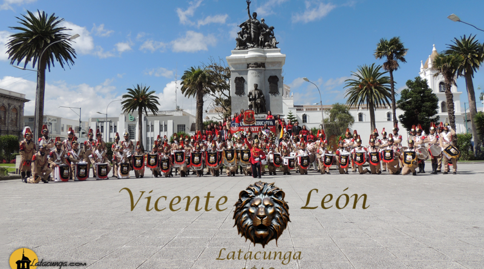

Talento, ciencia y tradición se unen para transformar el agro ecuatoriano.
Conoce el proyecto GOMISHQUI, innovación desde el agave.
El presente trabajo propone la producción y comercialización de "GOMISHQUI", gomas alimenticias elaboradas a base de aguamiel de cabuya. Aprovechamos una materia prima ancestral con alto valor nutricional, prolongamos su vida útil y generamos nuevas oportunidades económicas para comunidades rurales, impulsando el desarrollo sostenible.
Elaborar gomas alimenticias a partir de aguamiel de cabuya (Agave americana L.) como una alternativa de aprovechamiento agroindustrial.
✔ Aprovechamiento de recursos locales y revalorización del agave.
✔ Prolongación de vida útil del aguamiel, reducción de desperdicios.
✔ Generación de empleo rural y diversificación productiva.
✔ Producto saludable, natural, sin conservantes artificiales.
Gomishqui se posiciona como una alternativa innovadora en el mercado de snacks funcionales. Con potencial de escalamiento, certificación de calidad y alianzas con asociaciones de productores de cabuya en los Andes ecuatorianos.
Video referencial sobre el proceso de elaboración de gomitas, similar al utilizado en la formulación de GOMISHQUI.
La Unidad Educativa Vicente León participará en la I Feria Juvenil de Emprendimiento "Crea tu Futuro" organizada por el Ilustre Municipio de Latacunga, presentando el proyecto "GOMISHQUI", una iniciativa desarrollada por estudiantes como resultado de su esfuerzo, creatividad e investigación en las aulas.
Trabajo en las aulas: A través de un enfoque interdisciplinario, los estudiantes han combinado conocimientos de química de alimentos, administración y desarrollo sostenible para transformar el aguamiel de cabuya en un producto innovador con alto potencial agroindustrial.
"Este proyecto demuestra que los jóvenes pueden transformar los recursos ancestrales en soluciones con impacto positivo, respetando el medio ambiente y generando desarrollo".
— Padres de Familia, Feria CREA TU FUTURO
Fundada en 1840, la Unidad Educativa Vicente León ha sido pionera en la educación de calidad en Latacunga, formando generaciones de profesionales y ciudadanos comprometidos con el desarrollo del país.
Nuestro lema "Juventud Adelante" refleja el espíritu de superación y progreso que inculcamos en nuestros estudiantes.

📸 Campus principal - Latacunga
Apps web, inteligencia artificial, soluciones para industrias 4.0 y proyectos de impacto digital.
Optimización de procesos empresariales, cadena de suministro y emprendimientos sostenibles.
Gestión deportiva, actividad física y bienestar comunitario, formación integral.
Bachillerato general unificado con énfasis en investigación y educación superior.